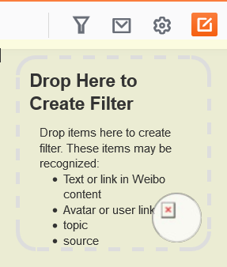
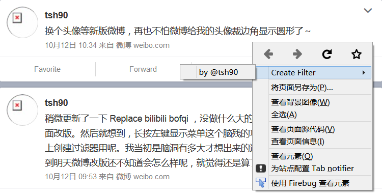
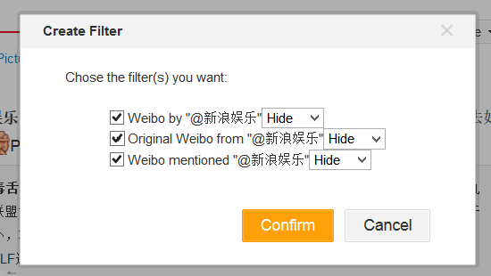

Filter Sina Weibo by keywords, original, topic, source, etc.; modify layout; and other relative functions
Current version of script only support Weibo v6. Last version with Weibo v5 supporting is 2.1.145. Users who have not upgraded to v6, please Install version 2.1, and disable script auto upgrade.
Installation Guide
Sorry, your current web browser is not supported. Please choose one of the following supported browsers.
After installation, click the funnel icon Y on the right top of page to config this script.
For who want to set up this script without check each configuration items, you can checkout the sample config file and import it by click the Import button on Script tab.
Useage Detail
Instead of adding filters of keywords, accounts, sources and links from the setting panel, you may drag and drop or use right-click menu to create filters.
Drag the contents you wish to hide, fold or highlight with your cursor, you can see there is a dropping area with yellow background at the top right corner, release your cursor in the dropping area and you may quickly create a filter by choosing the corresponding option from the pop-up dialogue box.

Right click on Weibo, and chose filter in the right-click menu.(Only supported in Firefox)


For users who used Weibo Content Filter, you may convert and import script setting from that script by using this Setting Convert Tool (Chinese).
For more details about the script using, please checkout FQA (Chinese).
Major Functions
Hide, fold or highlight weibo by keyword, regexp, author, and source etc.;
Completely block hidden weibo so that it won't be shown on mobile phone;
Filter out recommended Weibo, voting weibo, deleted weibo and other contents in Weibo list; Anti-spamming and chatting;
Desktop notification for new Weibo (may require Tab notifier extension);
Clear webpage layout, remove unnecessary modules and block advertisement;
Customized webpage layout, merge side columns, and reading mode that display only the weibo list;
Add "View Original" link, expand t.cn shortened url, and clear the default topic in weibo publishing box;
Most functions of the script are disabled by default, you may need to enable them in the script settings.
Privacy Policy
Data Collection
The script do not collect any of your personal information, but during the using this script, your network activities may be recorded by your ISP or related websites.
Network Access
The network access of this script is limited in related interface of Sina Weibo. This script use network for access or transport the following datas:
Accounts information if you hide, show, or fold someone
Report hidden Weibo to the server of Weibo if you enabled the function of blocking hidden Weibo
Local Storage
Your settings and related data are stored in browser profile without any encryption, which may include:
The account ID and name of hidden/folded/highlighted accounts, your account ID and other settings of the script
If you enabled the function of desktop notification, this script will also stored the ID of the 20 weibo recently shown.
Anyone who use the same computer may access these data. So do not use this script with public computer.
Others
The script do not publish any Weibo or information by using your account.
If you export settings, the exported file contains all your settings which may include some personal information. Please avoid to spread it to others.
About
Yet Another Weibo Filter (YAWF) is under the MIT License.
You may want to visit project homepage for more information.